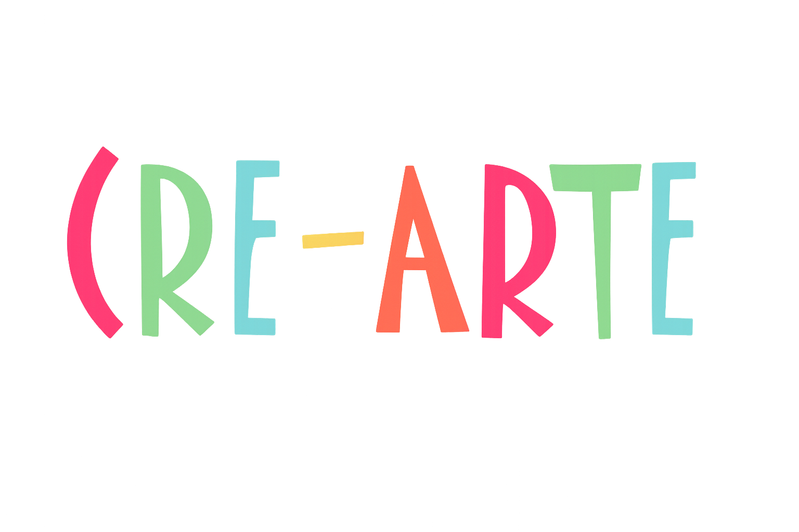
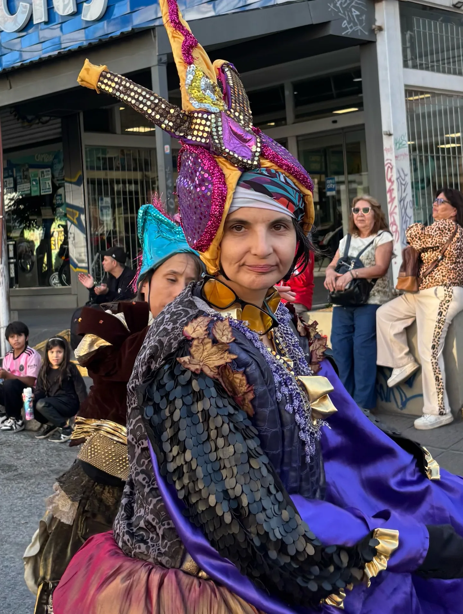
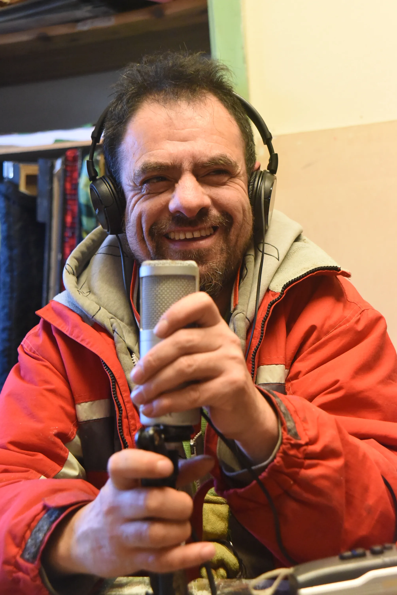
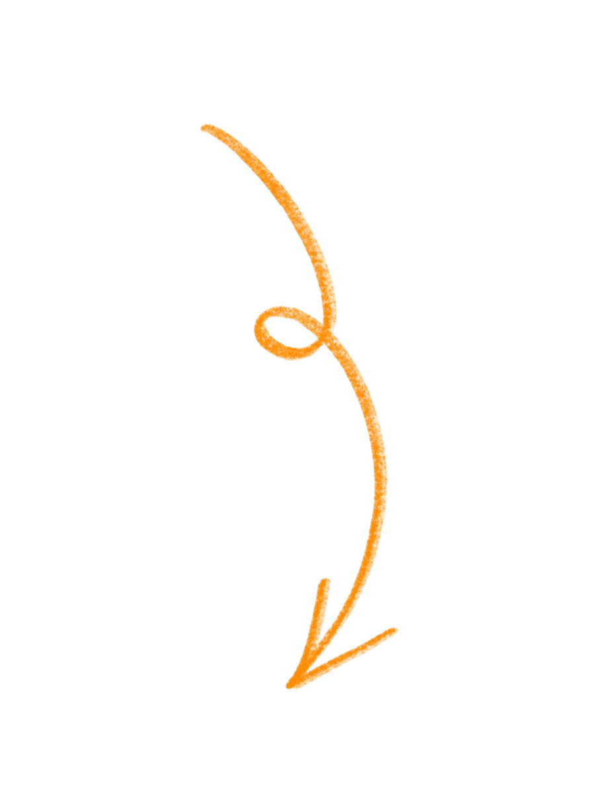

Secciones del sitio
¡Conocé más sobre nosotros!
Programas, cultura, deportes y más.
Nuestro proceso creativo




Encontranos

aquí
Un espacio de encuentro, arte y comunidad en el corazón de San Carlos de Bariloche.